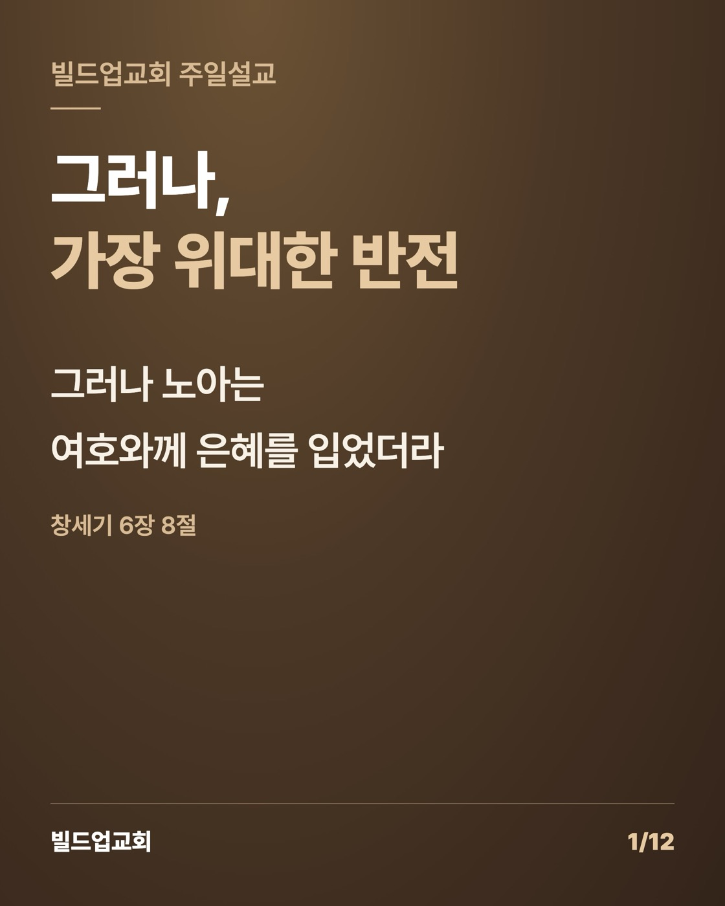

창세기 6장 1-8절을 묵상하며 · 황성현 목사
이번 주 설교를 준비하면서 창세기 6장 6절에서 오래 멈춰 있었습니다.
"땅 위에 사람 지으셨음을 한탄하사 마음에 근심하시고." (창세기 6장 6절)
처음에는 심판의 말씀으로 읽었습니다. 사람의 죄악이 세상에 가득하고, 마음으로 생각하는 모든 계획이 항상 악할 뿐이니 하나님이 진노하시는 것이 당연하다고 생각했습니다. 그런데 몇 번을 다시 읽다 보니 이 구절이 진노보다 아픔으로 먼저 다가왔습니다. 하나님이 근심하셨다는 말이 마음에 걸렸습니다. 근심은 화가 난 사람의 마음이라기보다 사랑하는 사람의 마음입니다. 사랑하지 않는 사람 때문에 근심하지는 않으니까요.
자녀가 엇나갈 때 부모는 화가 납니다. 그런데 그보다 먼저 마음이 아픕니다. 혼을 내고 돌아서서 혼자 우는 부모의 마음을 생각하면, 하나님이 노아 시대 사람들을 바라보시던 마음이 조금은 짐작이 됩니다. 그리고 그 자리에 다른 사람이 아니라 제가 서 있다는 것을 알게 되었습니다. 하나님의 마음을 아프게 한 사람은 그 시대 사람들만이 아니었습니다. 바로 저였습니다.
남들보다 크게 잘못하며 살지 않았다고 생각했습니다. 그런데 하나님은 행동만 보지 않으시고 마음을 보십니다. 겉으로는 웃으면서 속으로 했던 계산, 내 뜻대로 되지 않을 때 올라오던 서운함과 분노, 하나님보다 사람의 인정을 더 구하던 마음. 하나님 앞에 그대로 드러난 제 마음을 생각하니 부끄러웠습니다.
그런데 본문은 거기서 끝나지 않습니다. 8절이 이렇게 시작합니다.
"그러나 노아는 여호와께 은혜를 입었더라." (창세기 6장 8절)
설교 시간에 이 구절을 읽다가 목이 메었습니다. 하나님은 마음 아파하실 이유가 충분하셨고, 심판하실 이유도 충분하셨습니다. 그런데도 은혜를 베푸셨습니다. 사람이 죄를 지었기 "때문에" 은혜가 온 것이 아니라, 죄를 지었는데도 "그럼에도 불구하고" 은혜가 왔습니다. 내가 불쌍해 보여서도 아니고, 내가 회개를 잘해서도 아닙니다. 하나님이 그렇게 하기로 하셨기 때문입니다.
그 은혜의 끝에 십자가가 있습니다. 하나님은 홍수로 세상을 쓸어버리셨지만, 사람의 마음까지 씻어 내지는 못했습니다. 홍수가 끝난 뒤에도 "사람의 마음이 계획하는 바가 어려서부터 악함이라"(창 8:21)는 말씀이 이어집니다. 그래서 하나님은 다른 길을 여셨습니다. 우리를 지우시는 대신 우리 죄를 지우기로 하셨습니다. 그 값을 다른 누구에게 치르게 하지 않으시고 당신의 아들에게 지우셨습니다. 심판하실 분이 친히 심판을 받으셨습니다.

강단에서 이 말씀을 전하다가 눈물이 났습니다. 감사했습니다. 그리고 죄송했습니다. 나를 돌이키시려고 그렇게까지 하신 하나님 앞에서, 저는 여전히 너무 쉽게 그 은혜를 잊고 살았기 때문입니다.
말씀을 전하면서 성도님들의 얼굴이 하나씩 떠올랐습니다.
열심히 사시는 분들입니다. 잘하고 싶고, 인정받고 싶고, 어떻게든 삶을 바꿔 보고 싶어서 애쓰시는 분들입니다. 저도 그 마음을 압니다. 이번에는 정말 잘해 보겠다고 다짐하고, 또 넘어지고, 다시 다짐합니다. 그러다 지치면 하나님께 묻습니다. "언제쯤 제 인생에도 반전이 옵니까?"
그런데 이번 본문을 묵상하면서 알게 된 것이 있습니다. 우리 인생의 진짜 반전은 우리가 만드는 것이 아니라는 것입니다. 내가 더 잘해서, 내가 더 열심히 해서 쓰는 "그러나"가 아닙니다. 하나님이 이미 십자가로 써 놓으신 "그러나"가 있습니다.
노아도 홍수를 피하지 않았습니다. 짐승 울음소리와 냄새, 거친 파도로 가득한 방주 안에서 일 년 가까이 버텼습니다. 은혜를 입었다는 것은 고난이 없다는 뜻이 아니었습니다. 심판이 지나가는 한가운데서도 하나님이 붙들어 주셨다는 뜻이었습니다.
그러니 지금 형편이 바뀌지 않아도 괜찮습니다. 애써 증명하지 않아도 괜찮습니다. 하나님은 이미 우리를 보고 계시고, 아파하시고, 그럼에도 은혜를 베푸셨습니다. 그 은혜는 우리가 잘해서 얻어 낸 상이 아니라, 하나님이 사랑하셔서 거저 주신 선물입니다.
이번 한 주, 우리가 할 일은 많지 않습니다. 하나님의 마음을 헤아리며 죄를 가볍게 여기지 않는 것, 그리고 내 힘으로 반전을 만들려고 애쓰는 대신 그 은혜 안으로 피하는 것입니다. 기도의 자리로 돌아가 결과는 하나님께 맡기는 것입니다.
주일에 함께 드렸던 고백을 다시 적어 봅니다.
"나는 하나님의 마음을 아프게 한 사람입니다. 그러나 하나님은 나에게 은혜를 베푸셨습니다."
이 문장을 천천히 소리 내어 읽어 보십시오. 그리고 그 "그러나" 안에 담긴 하나님의 마음을 함께 묵상하는 한 주가 되기를 바랍니다.